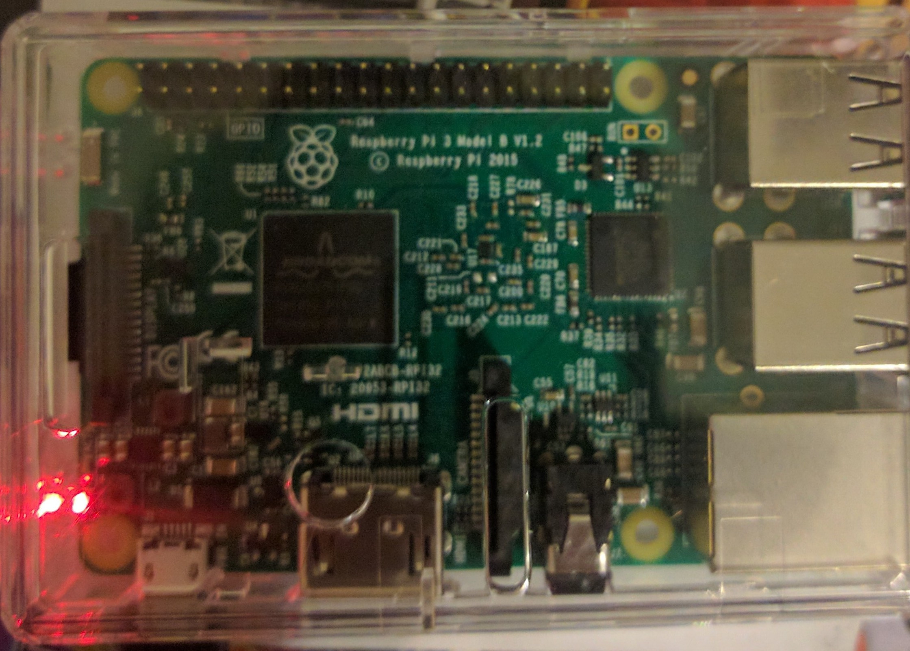
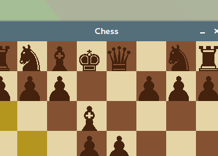

ABOUT ME:
My name is Maxwell Powell, I am a junior at The Ohio State University. I am graduating in May 2018 with a Bachelors of Science in Computer Science and Enginnering with a focus in Software Engineering. I am a motivated student with a desire to impact positive change by creating software solutions for real problems. I currently work as a Student Instructional Assistant for the Ohio State University Department of Computer Science and Engineering.
PROJECTS:

Personal Projects. |

FEH Robot Competition. |
|
|

Raspberry Pi Web Server. |

Java Chess Game. |
COURSEWORK:
- Software Components:
"Intellectual foundations of software engineering; design-by-contract principles; mathematical modeling of software functionality; component-based software from client perspective." syllabus
- Software Development and Design:
"Data representation using hashing, search trees, and linked data structures; algorithms for sorting; using trees for language processing; component interface design; best practices in Java." syllabus
- Discrete Structures:
"Propositional and first-order logic; basic proof techniques; graphs, trees; analysis of algorithms; asymptotic analysis; recurrence relations." syllabus
- Data Structures and Algorithms:
"Design/analysis of algorithms and data structures; divide-and-conquer; sorting and selection, search trees, hashing, graph algorithms, string matching; probabilistic analysis; randomized algorithms; NP-completeness." syllabus
- Low-Level Programming and Compter Organization:
"Introduction to computer architecture at machine and assembly language level; pointers and addressing; C programming at machine level; computer organization." syllabus
- Operating Systems Organization:
"Introduction to operating system concepts: process, CPU scheduling, memory management, file system and storage, and multi-threaded programming." syllabus
- Digital Logic:
"Introduction to the theory and practice of combinational and clocked sequential networks. "syllabus
- Design, Development, and Documentation of Web Applications:
"Intensive group project involving design, development, and documentation of a web application; client-side and server-side scripting; communication skills emphasized; builds programming maturity." syllabus
- Survey Artificial Intellegence - Basic Techniques:
"Survey of basic concepts and techniques in artificial intelligence, including problem solving, knowledge representation, and machine learning." syllabus
- Software Engineering Techniques:
"Software engineering issues, techniques, methodologies and technologies; software lifecycle activities: requirements analysis, architecture, design, testing, deployment, maintenance; project management; enterprise software systems; frameworks."
syllabus - Introduction to Computer Architecture:
"Organization of hardware and software in modern computer systems, including instruction set design, processor control, ALU design, pipelining, multicores and accelerators, and memory subsystem design." syllabus
- Statistics for Engineers:
"The course covers an introduction to probability, discrete and continuous random variables, probability distributions, expected values, sampling distributions, point estimation, confidence intervals, hypothesis testing and simple linear regression models." syllabus
- Intermediate Data Analysis:
"This is the first course in a two-semester non-calculus sequence in data analysis covering descriptive statistics, design of experiments, probability, statistical inference (one- and two-sample problem, goodness of fit, and one-way ANOVA)." syllabus